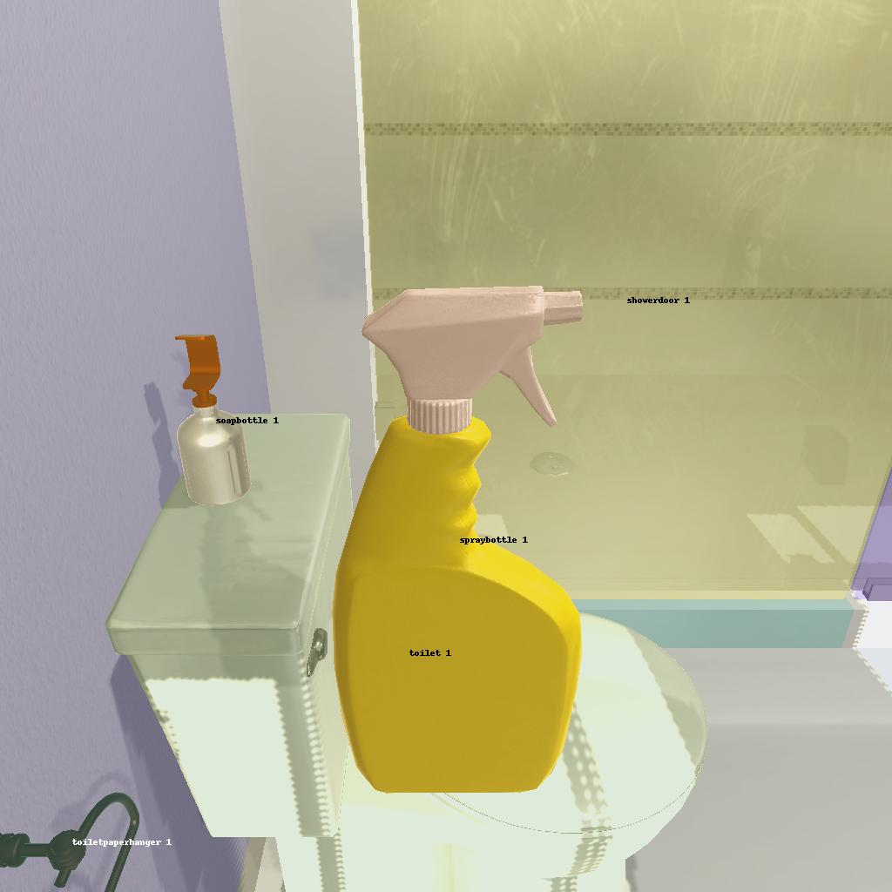
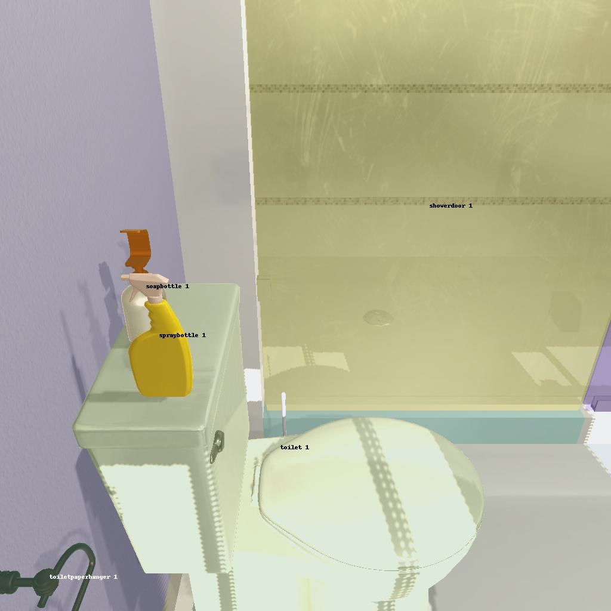

---------------------------------------------------------task: 28---------------------------------------------------------
--------------------------------------------------------------------------------------------------------------------------------------------------------------------
--------------------------------------------------------------------------------------------------------------------------------------------------------------------
Step:--------------------------------------------------------------------------11-------------------------------------------------------------------------------
----------------------------------------
VLM Prompt:
Image1:
Image2:
**Instruction**
1. Analyze the provided image to identify all visible household objects, focusing on those relevant to the task description "find two spraybottle and put them in toilet."
2. Use the analysis of the image and the task hint "The agent must find an object of the desired type, pick it up, find the correct location to place it, put it down there, then look for another object of the desired type, pick it up, return to previous location, and put it down there with the other object." to answer the question: what is the most reasonable action in the choices for the task description "find two spraybottle and put them in toilet"?
4. Decide and write the answer using the template: The answer is: (i): , where i is the real number. If there is no desired object in the image, search every place based on **Initial Observation** to find the object. And if no one is exactly correct, choose a similar answer.
**Initial Observation**
You are in the middle of a room. Looking quickly around you, you can see bathtub (1), bathtubbasin (1), cart (1), sink (1), garbagecan (1), sinkbasin (1), countertop (1), drawer (1-4), toilet (1), toiletpaperhanger (1)
**Answer Choices**
(1): go to bathtub 1
(2): go to bathtubbasin 1
(3): go to cart 1
(4): go to sink 1
(5): go to garbagecan 1
(6): go to sinkbasin 1
(7): go to countertop 1
(8): go to drawer 1
(9): go to drawer 2
(10): go to drawer 3
(11): go to drawer 4
(12): go to toiletpaperhanger 1
(13): take showerdoor 1 from toilet 1
(14): take soapbottle 1 from toilet 1
(15): examine toilet 1
**Answer**
Let's think step by step by following the instructions.
----------------------------------------
----------------------------------------
Original Response:
Firstly, we need to identify the spray bottles. In both images, there is one spray bottle located on top of the toilet. There is no second spray bottle visible in either image. Therefore, we must search other places based on the Initial Observation.
The next step is to think about where a spray bottle might be located. It is unlikely to be in the bathtub, bathtub basin, or on the toilet paper hanger. A cart, garbage can, or sink basin might be possible locations but are not typical places to store a spray bottle. Drawers and countertops are more common places to store such items.
Since we have already located one spray bottle on the toilet, the most reasonable next action would be to search the drawers or the countertop for the second spray bottle.
The answer is: (7): go to countertop 1.
----------------------------------------
----------------------------------------
>>> Refine Original VLM Response and Get Pure Action: go to countertop 1
----------------------------------------
-----------------------------------------------------------------
Running time: 27.964810848236084 seconds
Total Money: 14.100560000000003
-----------------------------------------------------------------
-----------------------------------------------------------------
Text Observation:You arrive at loc 6. On the countertop 1, you see a tissuebox 1, a toiletpaper 1, a handtowel 1, and a candle 1.
-----------------------------------------------------------------
UNSUCCEED